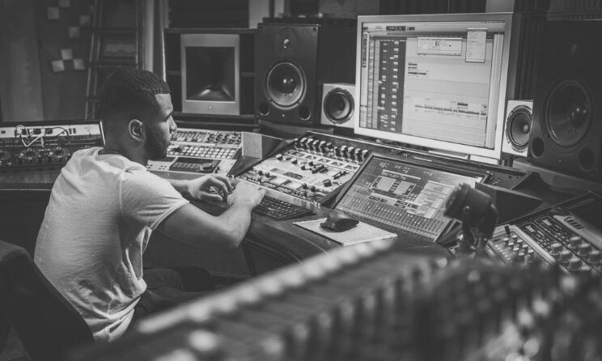

AQUI VOCÊ CONTA COM UMA EQUIPE ESPECIALIZADA EM TORNAR SEU SOM, O SOM DA GALERA !!
Fundada em 2003, a MAZE SOUNDS nasceu do sonho de um músico apaixonado, que acreditava no poder da música para transformar vidas. Em um pequeno estúdio improvisado, entre cabos, partituras e muita vontade de fazer acontecer, surgiu a ideia de criar não apenas um espaço de gravação, mas um verdadeiro lar para artistas independentes e amantes da música. O fundador, Michael Linsmayer, desde cedo foi movido pela arte sonora. Ainda jovem, tocava em bandas locais e produzia demos para amigos com equipamentos simples e criatividade de sobra. Com o passar dos anos, o sonho de ter uma produtora própria foi ganhando forma — e em 2019, com esforço, apoio de parceiros e muita fé, ele tirou esse sonho do papel. Os primeiros anos foram de muito trabalho e superação. O estúdio, modesto no início, logo começou a chamar a atenção pela qualidade das produções e pelo ambiente acolhedor, onde cada projeto era tratado com dedicação única. A produtora cresceu com a confiança dos artistas e o respeito conquistado no cenário musical local. Ao longo das décadas, a MAZE SOUNDS evoluiu. Ampliou sua estrutura, investiu em tecnologia de ponta e diversificou seus serviços, passando a oferecer não só gravação, mixagem e masterização, mas também produção executiva, trilhas sonoras, direção artística e consultoria musical. A essência, porém, nunca mudou: o compromisso com a autenticidade e com a realização dos sonhos de cada artista que passa por ali. Hoje, mais de 5 anos depois, a MAZE SOUNDS continua sendo referência, unindo experiência, inovação e paixão pela música. Tudo isso porque um músico acreditou que, com coragem e amor pelo que se faz, é possível transformar um sonho em um legado.
Durante muito tempo, o serviço de produção musical foi visto como algo exclusivo para grandes artistas ou gravadoras com alto investimento. No entanto, o cenário atual da música prova o contrário: a produção musical é uma ferramenta acessível e indispensável para todos que desejam levar sua arte a sério — do iniciante ao profissional consagrado. Mais que um luxo: uma necessidade Gravar com qualidade, ter arranjos bem construídos, direção artística coerente e um som profissional não é mais um diferencial — é o mínimo necessário para competir no mercado atual. Plataformas como Spotify, YouTube e TikTok expõem os artistas a um público global, onde o padrão de qualidade é cada vez mais alto. Isso significa que a produção musical deixou de ser um “extra” para se tornar parte fundamental da identidade sonora de qualquer artista.